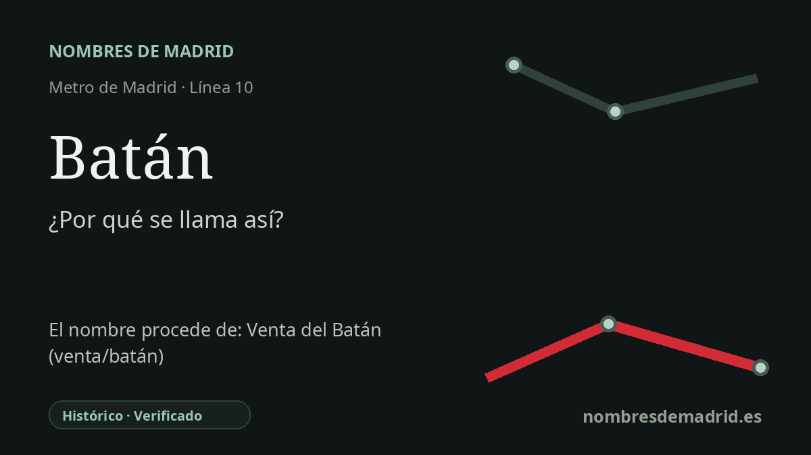

Publicado el · Investigación de Nombres de Madrid · Cómo verificamos cada origen · 6 fuentes consultadas
Respuesta rápida
Batán toma su nombre del paraje de la Casa de Campo en torno a la Venta del Batán. La palabra batán designa una máquina hidráulica que golpeaba y abatanaba los paños de lana.
La historia del nombre
La estación de Batán toma su nombre de El Batán, el topónimo de la Casa de Campo situado en el entorno de la Venta del Batán. No es, por tanto, una palabra ornamental escogida al azar: remite a un uso histórico concreto del paisaje del oeste de Madrid anterior a la estación moderna.
Un batán era una máquina de abatanar paños. En la producción textil, la fuerza del agua movía mazos de madera que golpeaban los tejidos de lana para compactarlos y darles más cuerpo después del tejido. El diccionario académico recoge batán tanto como la máquina como el edificio donde se instalaba; ese significado es la clave del topónimo madrileño.
La tradición local sitúa este batán en la Casa de Campo, cerca de antiguos cursos de agua y emplazamientos de molino del área del Meaques/Vadillo. Las historias del lugar describen un punto que fue molino harinero y después taller o fábrica vinculada a trabajos de cuero o paños, antes de que el nombre quedara asociado a la Venta del Batán. La cadena documental exacta está mejor conservada en estudios locales que en la información moderna de transporte, pero la explicación lingüística y topográfica es coherente.
El hito actual más conocido es la Venta del Batán, el complejo de chiqueros construido para la temporada taurina de San Isidro e inaugurado el 11 de mayo de 1950. Durante décadas fue el lugar donde se alojaban, y podían verse, los toros destinados a Las Ventas antes de la corrida. Ese uso posterior no creó la palabra batán, pero contribuyó a mantener visible el nombre antiguo en el Madrid del siglo XX.
La estación abrió en febrero de 1961 como parte del Ferrocarril Suburbano de Carabanchel, línea integrada después en Metro de Madrid como línea 10. La etimología queda verificada en lo esencial en la explicación pública: el nombre de la estación conserva un topónimo antiguo de la Casa de Campo derivado de un batán, mientras que la Venta del Batán moderna es una continuación importante de ese nombre, no el origen primero de la palabra.